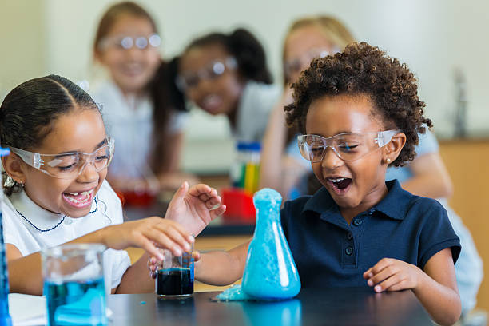
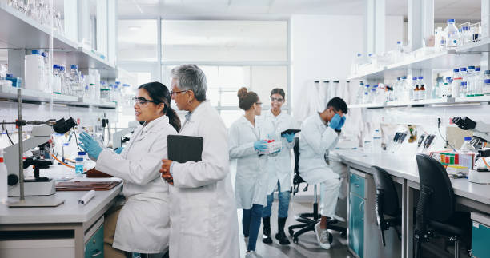
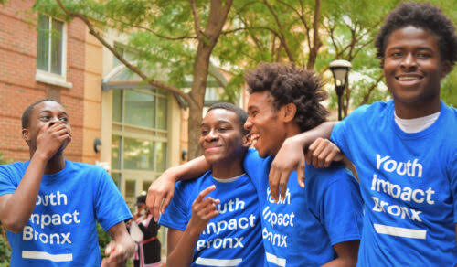
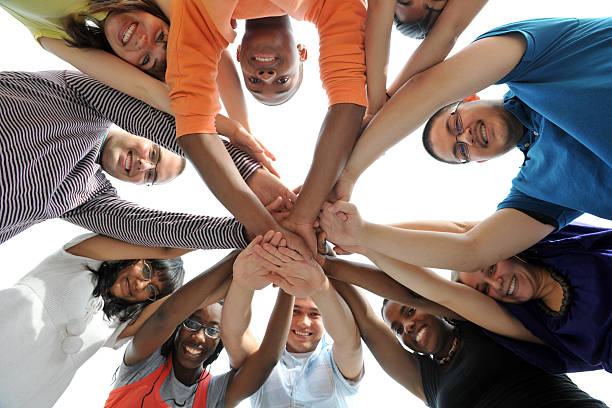

Start with a question
Wonder why, what if, or how come? That’s a great place to begin.
Youth Science Initiative / Aurora + GTA
Curiosity can change a community. We connect young people with science, with each other, and with opportunities to turn what they learn into something that matters.
Made for curious minds, wherever they’re starting from.


Our approach: ask better questions, explore what’s possible, and make something that matters.
01 / WHY YSI
We’re a youth-led initiative making science feel closer, more welcoming, and possible to try.
Through educational experiences and opportunities to meet scientists and professionals, Youth Science Initiative helps young people turn curiosity into their next question, project, or possibility.
02 / THE RIPPLE EFFECT
When young people can explore science on their own terms, the impact goes beyond one experiment. It grows with every connection, new skill, and idea shared.
See how we exploreWonder why, what if, or how come? That’s a great place to begin.
Meet scientists, professionals, and other young people who are curious too.
Explore a new field, share a project, and discover where your interests can lead.
More connection. More confidence. More care for the world around us.

Shared curiosity creates space for new friendships and different perspectives.
.jpg)
Exploring science can inspire us to care for our environment and our communities.

Listening, learning, and working together help a new idea go further.
Images illustrate the community, environmental care, and teamwork that inspire our mission.
03 / FIND YOUR SPARK
Follow a curiosity, try a new format, or meet someone who works in a field you’ve never heard of. Start wherever you are.
CURIOUS MINDS · UNDER 14
Get close to big ideas through conversations, activities, and new ways to see the world.
YOUTH · UNDER 18
Turn a “what if?” into an idea you can develop, share, and be proud of.
AURORA + GTA
Meet scientists and professionals, hear how they got here, and imagine your own next step.
Have an idea for something new? We’d love to hear it.
04 / YOUR NEXT STEP
Ask a question, share an idea, or find out how to get involved with Youth Science Initiative.
youthscienceinitiative.ysi@gmail.com